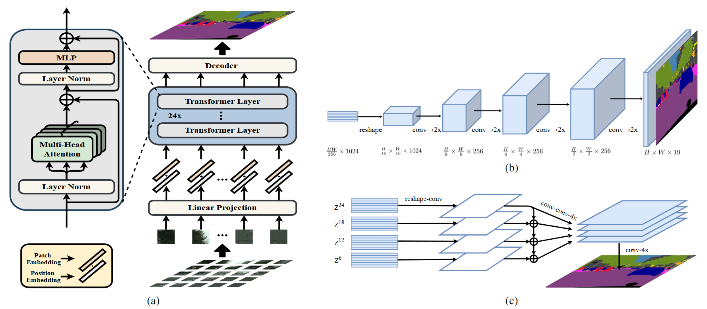

Rethinking Semantic Segmentation from a Sequence-to-Sequence Perspective with Transformers
完成时间：2022-11-29
来自：CVPR 2021
题目：《Rethinking Semantic Segmentation from a Sequence-to-Sequence Perspective with Transformers》
用Transformer从序列到序列的角度重新思考语义分割
[ CVPR2021，Semantic Segmentation ]
Abstract
1.使用Transformer，将输入的图像作为一组序列的patch进行编码，然后从Transformer的每一层中获取全局上下文。
2. SEgmentation TRansformer (SETR)
将语义分割任务视为一个Sequence-to-Sequence的预测任务，使用没有卷积和下采样过程的Transformer将一张输入的图像作为一组patch进行编码，通过Transformer中每一层所建模的全局上下文，Encoder即可接上一个简单的decoder，从而组合为一个强大的语义分割模型，该模型称为SETR。
3.实验表明提升：（数据集）ADE20K（50.28%mIoU）、Pascal Context（55.83%mIoU）、Cityscapes
一、总体介绍

1. 基于FCN的模型：一个标准的FCN分割模具有Encoder-Decoder架构
（1）Encoder：由大量卷积层堆叠而成，作用是提取更丰富的语义特征，通过降低特征图的分辨率来实现更大的感受野
（2）Decoder：对Encoder提取到的特征进行分类（通过上采样到原始的输入分辨率）
（3）结构的优缺点：具有一定的泛化能力，跨空间共享参数可以降低模型的复杂度；但CNNs难以学习长距离依赖关系
2. 解决方法
（1）直接修改卷积操作：大卷积核、空洞卷积、图像/特征金字塔等；
（2）引入注意力模块，对feature map中各个像素建模全局上下文信息。
上述两种方式的结构仍然属于Encoder-Decoder的FCN，没有本质上的结构变化。
Transformer 的一个特性便是能够保持输入和输出的空间分辨率不变，同时还能够有效的捕获全局的上下文信息。因此，作者这里便采用了类似ViT的结构来进行特征提取同时结合Decoder来恢复分辨率。
3. 本文工作：提出SETR（SEgmentation TRansformer）
（1）使用仅包含transformer的Encoder，替代原来的堆叠卷积进行特征提取的方式，这种方式称之为 SEgmentation TRansformer (SETR)。
（2）SETR的Encoder通过学习patch embedding将一副图片视为一个包含了一组image patches的序列，并利用全局自注意力对这个序列进行学习。
（3）具体来说：
a. 首先，将图像分解成一个由固定大小的patch组成的网格，形成一系列的patches；
b. 然后，对每个patch拉直后使用一个线性embedding层进行学习，即可获得一个特征嵌入向量的序列，并将该序列作为transformers的输入；
c. 接着，经过transformers Encoder之后，得到学习后的高度抽象feature maps；
d. 最后，使用一个简单的decoder获得原始分辨率大小的分割map。
SETR的整个过程中，很关键的一点就是没有下采样过程，这和传统基于卷积的backbone进行特征提取的方式是不同的！
二、创新点
1. 对语义分割任务重新进行了定义，将其视为Sequence-to-Sequence的问题，这是除了基于Encoder-decoder结构的FCN模型的另一个选择；
2. 使用纯Transformer作为Encoder，对序列化的图片进行特征表示；
3. 设计了三种decoder，来对自注意力进行深入研究。